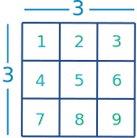
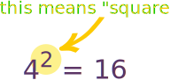
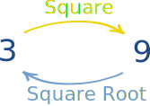
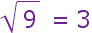
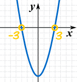
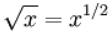

Squares and Square Roots in Algebra
You might like to read our Introduction to Squares and Square Roots first.
Squares
To square a number, just multiply it by itself ...
Example: What is 3 squared?
| 3 Squared | = |  | = 3 × 3 = 9 |
"Squared" is often written as a little 2 like this:

This says "4 Squared equals 16"
(the little 2 means
the number appears twice in multiplying, so 4×4=16)
Square Root
A square root goes the other direction:

3 squared is 9, so a square root of 9 is 3
It is like asking:
What can I multiply by itself to get this?
Definition
Here is the definition:
A square root of x is a number r whose square is x:
r2 = x
r is a square root of x
The Square Root Symbol
|
This is the special symbol that means "square root",
it is like a tick, |
We can use it like this:

we say "square root of 9 equals 3"
Example: What is √36 ?
Answer: 6 × 6 = 36, so √36 = 6
Negative Numbers
We can also square negative numbers.
Example: What is minus 5 squared?
But hang on ... what does "minus 5 squared" mean?
- square the 5, then do the minus?
- or square (−5)?
It isn't clear! And we get different answers:
- square the 5, then do the minus: −(5×5) = −25
- square (−5): (−5)×(−5) = +25
So let's make it clear by using "( )".
Example Corrected: What is (−5)2 ?
Answer:
(−5) × (−5) = 25
(because a negative times a negative gives a positive)
That was interesting!
When we square a negative number we get a positive result.
Just the same as when we square a positive number:

Now remember our definition of a square root?
A square root of x is a number r whose square is x:
r2 = x
r is a square root of x
And we just found that:
(+5)2 = 25
(−5)2 = 25
So both +5 and −5 are square roots of 25
Two Square Roots
There can be a positive and negative square root!
This is important to remember.
Example: Solve w2 = a
Answer:
w = √a and w = −√a
Principal Square Root
So if there are really two square roots, why do people say √25 = 5 ?
Because √ means the principal square root ... the one that isn't negative!
There are two square roots, but the symbol √ means just the principal square root.
Example:
The square roots of 36 are 6 and −6
But √36 = 6 (not −6)
The Principal Square Root is sometimes called the Positive Square Root (but it can be zero).
Plus-Minus Sign
| ± | is a special symbol that means "plus or minus", |
| so instead of writing: | w = √a and w = −√a | |
| we can write: | w = ±√a |
In a Nutshell
Why Is This Important?
Why is this "plus or minus" important? Because we don't want to miss a solution!
Example: Solve x2 − 9 = 0
The "±" tells us to include the "−3" answer also.

Example: Solve for x in (x − 3)2 = 16
Check: (7−3)2 = 42 = 16
Check: (−1−3)2 = (−4)2 = 16
Square Root of xy
When two numbers are multiplied within a square root, we can split it into a multiplication of two square roots like this:
√xy = √x√y
but only when x and y are both greater than or equal to 0
Example: What is √(100×4) ?
And √x√y = √xy :
Example: What is √8√2 ?
Example: What is √(−8 × −2) ?
We seem to have fallen into some trap here!
We can use Imaginary Numbers, but that leads to a wrong answer of −4
Oh that's right ...
The rule only works when x and y are both greater than or equal to 0
So we can't use that rule here.
Instead just do it this way:
√(−8 × −2) = √16 = +4
Why does √xy = √x√y ?
We can use the fact that squaring a square root gives us the original value back again:
(√a)2 = a
Assuming a is not negative!
An Exponent of a Half
A square root can also be written as a fractional exponent of one-half:

but only for x greater than or equal to 0
How About the Square Root of Negatives?
The result is an Imaginary Number... read that page to learn more.